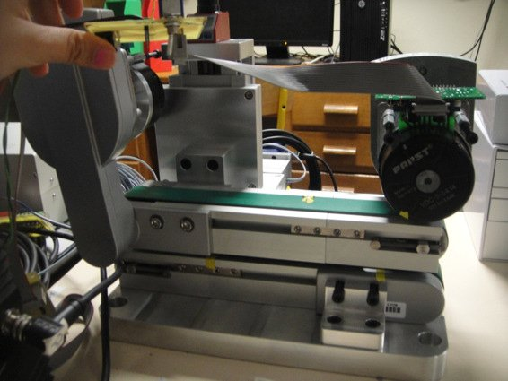

Academic bedside robots · insa_naudin2019
EVAR platform
INSA Lyon / Ampère low-cost robotic platform for endovascular aneurysm repair (EVAR): two stacked conveyors pinch the guidewire, an X-Y table rolls it, simulation-driven haptic leader

1 / 4


- Family
- Academic bedside robots (academic)
- Devices
- guidewire ("guide"); "it is also possible to drive a catheter by this system instead of a guide wire"; one device at a time (Sec. III-A)
- Degrees of freedom
- 2 device DOF (translation along z, rotation about z) plus a prismatic gap adjustment (y) that sets the conveyor spacing for the device diameter (Sec. III-A, Fig. 3)
- Push
- Belt pinch
- Twist
- Other
- Tested up to
- Bench
- Sim-to-real
- None found — No simulation-trained controller found for this robot.
Testing
- Highest level
- Bench
- What was tested
- bench: conveyor translation tracking of the stylus reference trajectory with a proportional speed loop (Simulink/ControlDesk, Fig. 14) and recording of the rotation reference (Sec. IV-A); haptic lookup coupled to the platform (Sec. IV-B). The silicone aorta phantom is built for guide insertion but no insertion result is reported; real-time control was not achieved with MATLAB/Simulink/dSPACE and was re-written in C afterwards (Sec. V). Alekseeva 2025 Table 4 lists it as TRL3 (ex vivo phantom).
- Key numbers
- motor speed command 0-10 V, direction 0/5 V (Sec. IV-A); simulated insertion speed 20 mm/s (Sec. IV-B); exit of contact for an arbitrary 90 deg rotation (Sec. V); tracking error shown only as a curve x10 (Fig. 14), no number reported (N.R.)
Mechanism
- Push (translation)
- belt/track: two conveyors placed one over the other pinch the guidewire, each driven by a DC motor, coupled so they turn in opposite directions (Sec. III-A, IV-A, Figs. 3-4)
- Twist (rotation)
- other: an X-Y table translates one conveyor over the other, rolling the pinched wire about its own axis (cylindrical joint S1-S2; Sec. III-A, Figs. 3, 5)
- Device range
- N.R. (conveyor gap adjustable "to use guide wires with different diameters", Sec. III-A)
- Target anatomy
- abdominal aorta and iliac arteries (EVAR of an abdominal aortic aneurysm); patient-specific silicone phantom printed by additive manufacturing, spring-suspended in a water tank (Sec. II, III-A, Fig. 6)
Sensing and interface
- Force sensing
- none on the robot; the force sent to the leader is the guide-aorta contact force of an ABAQUS simulation, looked up by inserted length (Sec. III-C, IV-B); the authors state it is not the force at the tool (Sec. V)
- Leader and haptics
- Geomagic Touch (6 DOF, 3 motorised); pressing a stylus button acts as pinching the guide (clutch), stylus translation and rotation are sent to the conveyors and the X-Y table; renders the simulated contact force opposite to the push (Sec. III-A, III-C, Fig. 7)
- Imaging
- N.R. (no fluoroscopy in the platform; phantom in a transparent water tank)
- Sterility
- N.R.
Size
- Footprint (mm)
- N.R.
- Mass (kg)
- N.R.
Simulation
- Simulation model
- yes: ABAQUS finite-element model of the guide inserted in a patient aorta and iliac model (elastic, hyperelastic and linear composite materials; Mouktadiri 2013, ref 6) gives contact forces per inserted length, used as the haptic lookup table (naudin2019_evar Sec. III-B, IV-B, Fig. 8)
- Sim-trained controller
- none found (the simulation feeds an offline force lookup; no simulation-trained controller)
Versions
- Lineage
- single version (naudin2019_evar, AIM 2019); its finite-element model of guide insertion comes from the INSA thesis of G. Mouktadiri 2012 and Mouktadiri et al., J. Biomed. Sci. Eng. 2013 (refs 5-6, not read)
Sources
- A Robotic Platform For Endovascular Aneurysm Repair · 2019 IEEE/ASME International Conference on Advanced Intelligent Mechatronics (AIM), 2019 · doi:10.1109/AIM.2019.8868919 [naudin2019_evar]
- The Design of Endovascular Robots for Cardiac Interventions: A Survey · Journal of Field Robotics, 2024 · doi:10.1002/rob.22480 [alekseeva2025_design]
- Evolution and current state of robotic catheters for endovascular surgery: A comprehensive review · Engineering Science and Technology, an International Journal, 2024 · doi:10.1016/j.jestch.2024.101789 [belikov2024_evolution]
Notes
- Notes
- N2 2026-11-08, from review_comparison §1.2 row 23. Built as a low-cost teaching and trajectory-planning platform for EVAR (Abstract, Sec. I). Alekseeva Fig. 12c draws only its rolling-belt principle. Highest validation is bench, not phantom as Alekseeva says: the phantom exists, but no result in it is reported.
This record
- Read level
- full — full (naudin2019_evar); review-only (alekseeva2025_design Table 4 row 1; belikov2024_evolution Fig. 6 NA)
- Picture
- naudin2019_evar Fig. 4 (two conveyors), p. 3 ↗ — licence: publisher copyright (IEEE); grade C
- Picture changes
- native extract; no crop; no edit; not upscaled
- Found by
- gap: Gap searches for robots the other searches missed.
- Data
- JSON · YAML:
records/robots/insa_naudin2019.yaml - Correction
- Suggest a correction [repository not created yet]